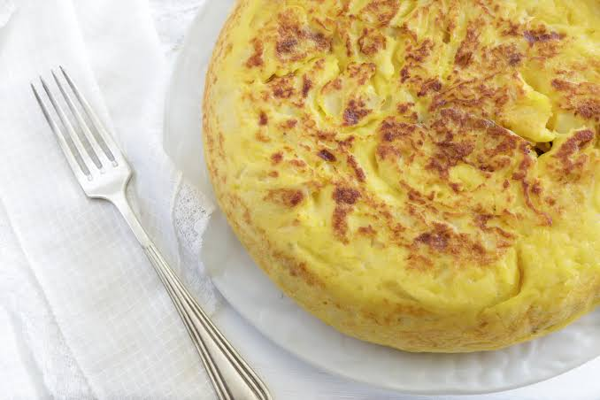

Tortilla au four
Ingrédients
×
- 500 g de pommes de terre
- 1 poivron rouge
- 2 oignons
- 2 c. à s. d'huile
- chorizo ou merguez
- 6 oeufs
- 2 c. à s. de persil ciselé
- 0.5 c. à c. de curry
- sel
- poivre
- fromage râpé

Préparation
Étape 1
Peler 500 g de pommes de terre et les couper en rondelles. Les rincer à l’eau froide et les égoutter. Épépiner 1 poivron rouge et le couper en petits morceaux.
Étape 2
Rissoler 2 oignons hachés 5min dans 2 c. à s. d'huile. Ajouter les pommes de terre et cuire 15min à feu vif en remuant délicatement. Ajouter le poivron et du chorizo ou merguez en morceaux à mi-cuisson.
Étape 3
Battre 6 oeufs avec 2 c. à s. de persil ciselé, 0.5 c. à c. de curry, du sel et du poivre. Incorporer les légumes et éventuellement du fromage râpé.
Étape 4
Verser dans un moule rectangulaire huilé, sur 4cm d’épaisseur. Cuire 30min à 200ºC, jusqu’à ce que la tortilla soit prise et dorée.
Conseils
- Servir tiède ou froid, coupé en cubes.
Résumé
500 g de pommes de terre
1 poivron rouge
couper en rondelles
2 oignons
2 c. à s. d'huile
chorizo ou merguez
Rissoler cuire
6 oeufs
2 c. à s. de persil ciselé
0.5 c. à c. de curry
sel
poivre
fromage râpé
Battre
Cuire 200ºC